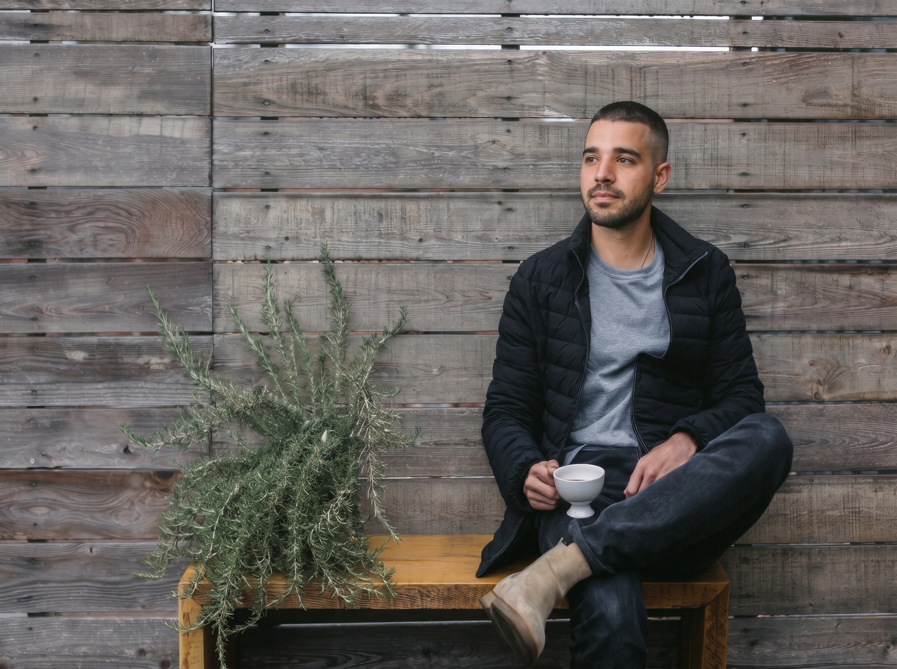

Julián Camilo Sánchez Tobón
Soy Estudiante de Desarrollo de Software | Domiciliario | Productor Musical
About
Soy Julián Camilo Sánchez Tobón, un hombre apasionado y en continuo aprendizaje. Nacido y criado en Medellín, casado, actualmente empleado como domiciliario y estudiante de desarrollo de software en CESDE.

Estudiante de Desarrollo de Software & Productor Musical
Con habilidades aprendidas en HTML, CSS, lógica y bases de datos. Apasionado por el baloncesto y la música (productor musical empírico).
- Edad: 31 Años
- Ciudad: Medellín, Colombia
- Estado Civil: Casado
- Ocupación: Domiciliario / Estudiante CESDE
- Habilidades: HTML, CSS, Lógica, BD
- Pasiones: Baloncesto, Música